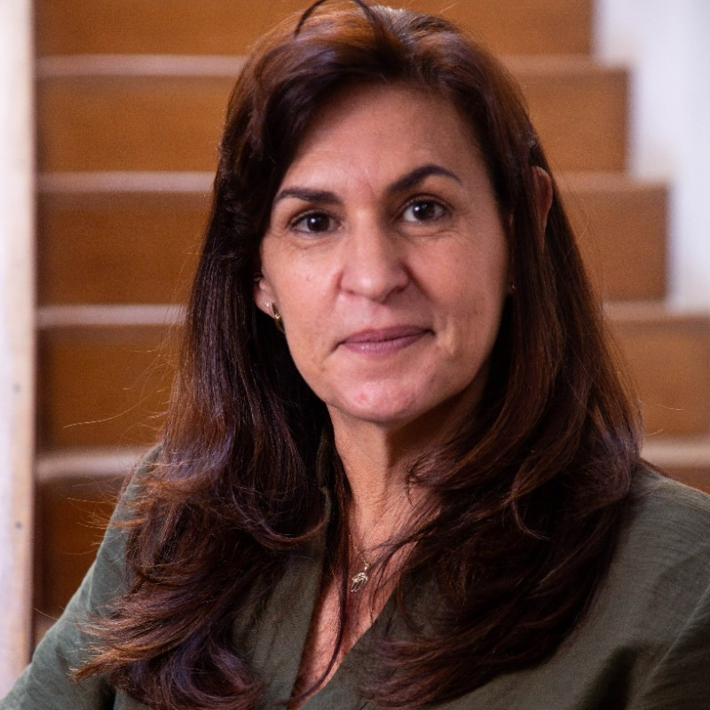
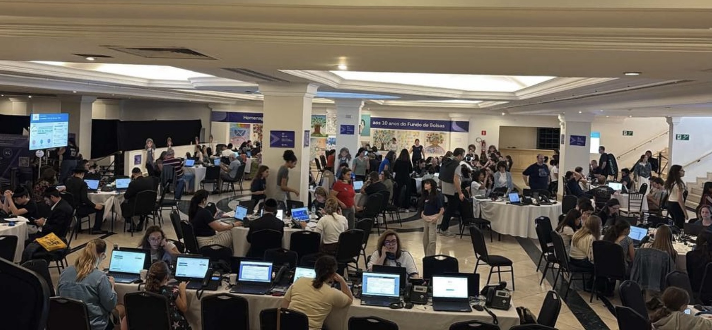
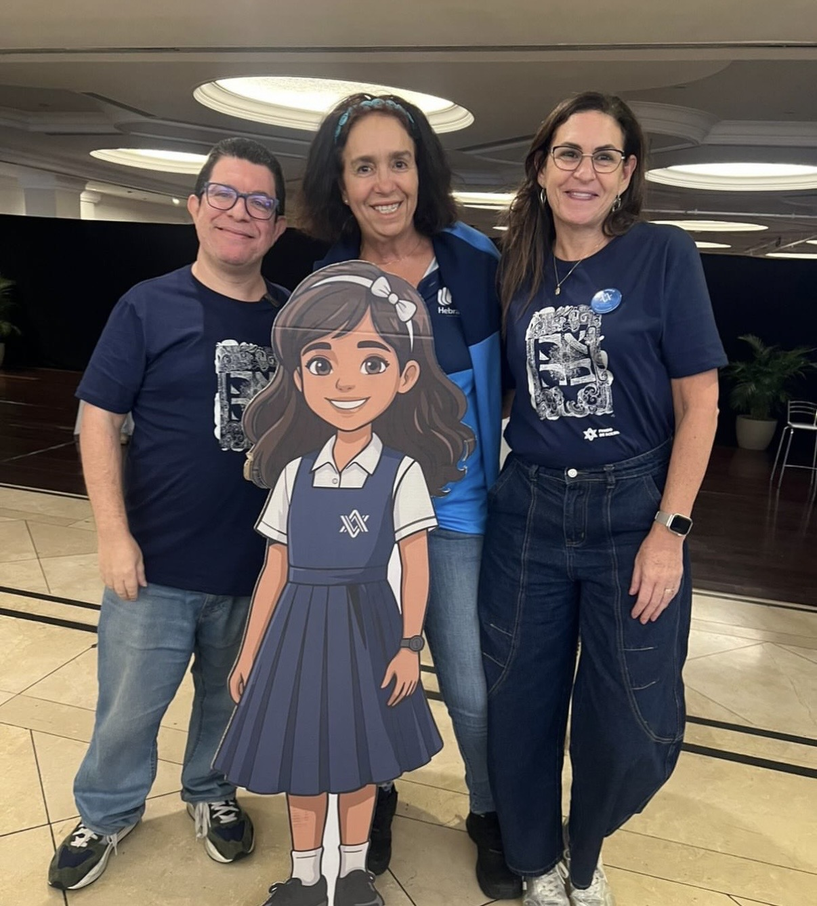
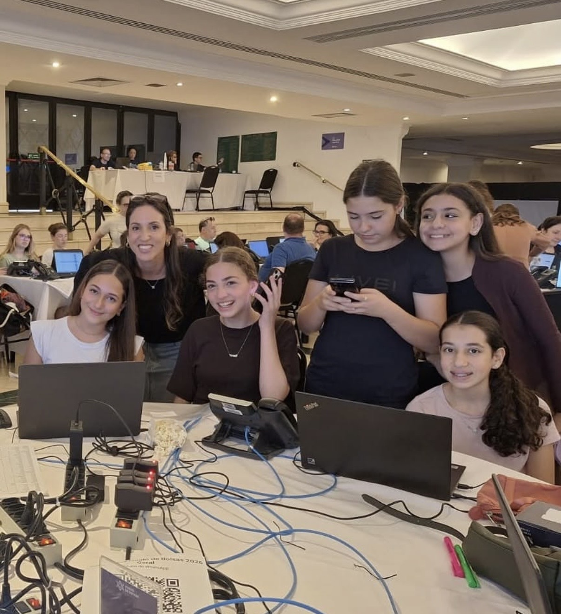

Toda grande transformação começa quando uma comunidade deixa de se perguntar “quem vai fazer isso?” e passa a responder “nós faremos”.
A recente campanha do Fundo de Bolsas demonstrou exatamente isso. Os R$ 50 milhões (quase USD 10 milhões) arrecadados são extraordinários. Mas o que realmente merece ser celebrado é a capacidade de milhares de pessoas de se unirem em torno de um mesmo propósito: investir em educação e, com isso, no futuro coletivo.
Os números importam porque permitem dimensionar essa mobilização: mais de 4.000 doadores, mais de 800 voluntários, 14 escolas trabalhando juntas e a ampliação do número de bolsas concedidas, chegando a quase 900 por ano.
Em conjunto, esses resultados consolidam a maior campanha de mobilização comunitária em participação, volume arrecadado, número de doadores e voluntários, e diversidade de modelos de arrecadação. Mas também contam uma história que vai além dos indicadores: a de uma comunidade que foi capaz de transformar confiança, transparência e colaboração em ação coletiva.
Quando existe a convicção de que investir em educação é investir no próprio futuro, a filantropia deixa de ser apenas um ato de doação e se transforma em uma construção compartilhada.
Na filantropia estratégica, os recursos financeiros nunca são um fim em si mesmos. São instrumentos para gerar transformação. Toda campanha bem-sucedida começa muito antes da primeira doação. Nasce da construção de uma visão compartilhada, da capacidade de mobilizar pessoas em torno de uma causa e da credibilidade construída ao longo do tempo.
É exatamente isso que torna o Fundo de Bolsas uma experiência relevante para toda a América Latina. Sua trajetória demonstra que campanhas de grande escala não são resultado apenas de uma boa estratégia de arrecadação, mas da construção paciente de relações de confiança entre instituições, lideranças, voluntários, escolas, famílias, doadores, profissionais e toda a comunidade.
A confiança é o capital mais valioso da filantropia. Não se conquista com discursos, mas com consistência, transparência e responsabilidade.

Em tempos de tantas urgências, é legítimo perguntar onde investir para produzir mudanças duradouras. Poucas respostas são tão consistentes quanto a educação.
Cada bolsa concedida representa muito mais do que a permanência de um estudante em sua escola. Fortalece as famílias, preserva vínculos comunitários, amplia oportunidades, desenvolve lideranças e contribui para a continuidade de uma identidade construída ao longo de gerações.
Quando uma comunidade decide investir em educação, não está apenas apoiando indivíduos. Está fortalecendo seu capital humano, social e cultural. Está investindo em seu próprio futuro.
Talvez esta seja uma das maiores lições da campanha: compreender que a educação não é um gasto comunitário. É um investimento estratégico de longo prazo, cujos efeitos se estendem muito além do período em que cada bolsa é concedida.
Nenhuma organização poderia alcançar sozinha resultados dessa magnitude. A campanha foi construída por centenas de pessoas que colocaram seu tempo, sua energia, seus recursos, seus talentos e sua credibilidade a serviço de uma causa coletiva.
Os pais mobilizaram as famílias. Os alunos inspiraram novas gerações de doadores. Os filantropos abriram portas e multiplicaram oportunidades. Os voluntários organizaram eventos, promoveram encontros, compartilharam histórias e transformaram suas redes pessoais em redes de solidariedade. As instituições comunitárias somaram capacidades e ampliaram o alcance da mobilização.

Existe, no entanto, um elemento que muitas vezes permanece menos visível para quem observa apenas o resultado final: as grandes mobilizações comunitárias não acontecem apenas graças à boa vontade. Exigem planejamento, método, coordenação, escuta, acompanhamento permanente e uma equipe profissional dedicada, capaz de conectar pessoas, processos e propósito ao longo de todo o ano.
Por trás de cada voluntário mobilizado, de cada doador engajado e de cada bolsa concedida existe um trabalho profissional que transforma a intenção em execução, garante continuidade, organiza as informações, acompanha os critérios e sustenta a confiança necessária para que o sistema funcione.
A força desta iniciativa reside precisamente na complementaridade entre os diferentes papéis. A liderança inspira e abre caminhos. A equipe profissional cria estrutura e continuidade. Os voluntários ampliam o alcance e dão vida à mobilização. Os doadores tornam o investimento possível. As escolas e as famílias conectam a causa com a realidade cotidiana. Os alunos lembram a todos por que esse esforço existe.
Cada contribuição tem uma natureza diferente, mas nenhuma é secundária. O resultado coletivo nasce justamente da capacidade de reconhecer o valor de cada papel e de fazer com que todos trabalhem em sinergia.
Em um momento em que tantas comunidades enfrentam polarização e fragmentação, a campanha demonstrou que é possível concentrar a energia naquilo que une, sem negar as diferenças que naturalmente existem. O propósito comum se tornou maior do que qualquer divergência.
Há um elemento presente em todas as grandes iniciativas filantrópicas bem-sucedidas: a prestação de contas (accountability). Mais do que informar resultados, significa assumir responsabilidade pelas decisões tomadas, pelos critérios utilizados e pelos resultados produzidos.
Cada vez mais, os doadores querem compreender não apenas quanto foi arrecadado, mas como os recursos são utilizados, quais critérios orientam as decisões, como o processo é acompanhado e quais transformações são efetivamente geradas.
A transparência deixou de ser apenas uma obrigação institucional. Tornou-se uma estratégia para fortalecer a confiança.
O Fundo de Bolsas construiu sua reputação justamente por combinar governança, critérios claros, acompanhamento profissional, prestação de contas e um compromisso permanente com o impacto. Esse modelo fortalece não apenas uma campanha: fortalece toda a cultura de doação da comunidade.
Quando existe confiança, as pessoas voltam a doar. Convidam novos doadores. Engajam suas famílias. Mobilizam suas redes. A confiança se transforma em um ativo coletivo capaz de multiplicar o impacto ao longo do tempo.
Talvez o aspecto mais emocionante desta campanha seja compreender que ela pertence a todos. Ao grande doador e à criança que participou de uma ação solidária na escola. Ao filantropo experiente e ao jovem que fez sua primeira doação. À liderança comunitária, ao profissional que organizou processos e ao voluntário que dedicou algumas horas do seu dia a ligar, organizar um evento ou compartilhar uma mensagem.
Essa diversidade de participação fortalece um sentimento essencial para qualquer comunidade: o senso de pertencimento.
Quando as pessoas compreendem que podem contribuir de diferentes maneiras, deixam de ser apenas beneficiárias ou espectadoras e se tornam protagonistas da transformação. É justamente essa cultura participativa que ajuda a garantir a sustentabilidade das iniciativas de longo prazo.
O valor deste movimento não está em identificar quem foi o protagonista, mas em reconhecer que o resultado só foi possível porque muitos protagonistas aceitaram compartilhar responsabilidade, trabalho e mérito.
A experiência do Fundo de Bolsas oferece aprendizados que ultrapassam os limites de uma única campanha. Demonstra que os grandes resultados acontecem quando as organizações escolhem cooperar em vez de competir; quando as informações e as responsabilidades são compartilhadas com transparência; quando o impacto coletivo é colocado acima dos interesses individuais; e quando as lideranças compreendem que construir confiança é tão importante quanto arrecadar recursos.
Esses princípios dialogam diretamente com os desafios que a filantropia estratégica enfrenta em toda a América Latina. Vivemos um momento em que os problemas sociais se tornam cada vez mais complexos e em que nenhuma organização pode enfrentá-los sozinha.
O futuro pertence às redes, às alianças e às iniciativas capazes de mobilizar diferentes atores em torno de objetivos compartilhados, aproveitando as complementaridades e as sinergias positivas, sem permitir que as diferenças nos afastem daquilo que podemos construir juntos.
Ao celebrar os resultados desta campanha, celebramos muito mais do que um desempenho extraordinário em arrecadação. No final, talvez esta seja a maior lição da filantropia estratégica. O impacto não nasce apenas dos recursos que arrecadamos. Nasce da confiança que construímos, da colaboração que cultivamos, da transparência que praticamos e da capacidade de unir pessoas diferentes em torno de um propósito que pertence a todos.
Porque as comunidades fortes não são aquelas em que todos pensam da mesma maneira. São aquelas que descobrem que seu futuro é grande demais para ser construído individualmente e escolhem construí-lo juntas.
É também por isso que compartilhar esta experiência na Rede de Filantropia Estratégica da América Latina (RFE) faz tanto sentido. A proposta de valor de uma rede como a RFE reside precisamente em transformar experiências particulares em aprendizado coletivo: criar um espaço de confiança no qual filantropos, fundações e lideranças possam compartilhar práticas, erros, descobertas e modelos que ajudem todo o ecossistema a avançar.
Ao trazer o caso do Fundo de Bolsas para esta conversa, não pretendemos apresentar uma fórmula pronta para ser replicada. Cada comunidade tem sua própria realidade, sua história e seus desafios. O que pode, sim, viajar de uma experiência a outra são os princípios: a colaboração como estratégia, a transparência como compromisso, a profissionalização como base para a sustentabilidade, a educação como investimento transformador e a confiança como patrimônio coletivo.
Se esta experiência puder inspirar outras organizações da América Latina a criar alianças, investir em equipes qualificadas, valorizar seus voluntários, compartilhar responsabilidades e buscar sinergias em torno de propósitos comuns, seu impacto terá ultrapassado os limites da campanha.
Esse é, no final, um dos maiores valores de estar em rede: fazer com que aquilo que aprendemos em uma iniciativa deixe de pertencer apenas a nós e passe a fortalecer muitos outros. Quando compartilhamos conhecimento, multiplicamos possibilidades. Quando compartilhamos propósito, ampliamos o impacto.
Nosso especial reconhecimento e agradecimento aos membros da RFE que também integram o Conselho do Fundo de Bolsas e que, com seu compromisso, generosidade e participação ativa, representam o espírito desta iniciativa: a Família Feffer, representada pela Fundação Arymax; Natalie Klein Duek; e Raphael Klein, representado pelo Instituto Golden Tree. Seu envolvimento demonstra o valor de lideranças filantrópicas que não apenas contribuem com recursos, mas também dedicam tempo, experiência, confiança e capacidade de articulação a serviço de um propósito comum.
E, sobretudo, um reconhecimento especial à equipe profissional do Fundo de Bolsas, cuja competência, compromisso e excelência têm sido fundamentais para tornar possível tudo o que esta iniciativa representa.